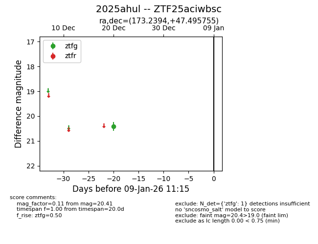
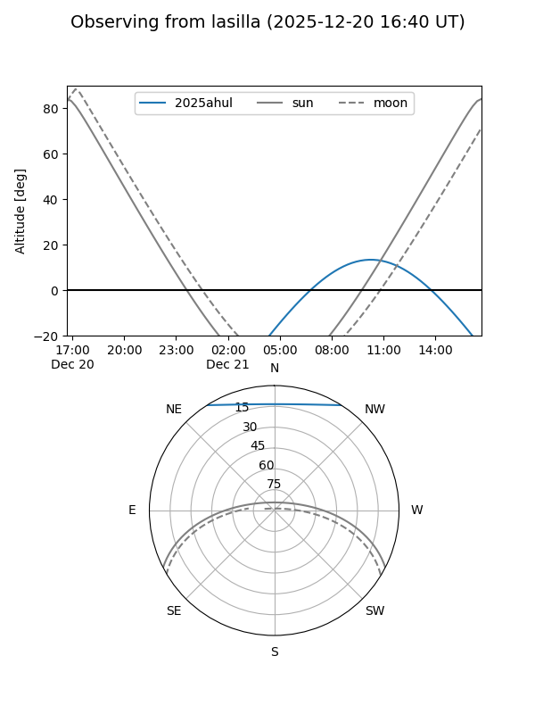
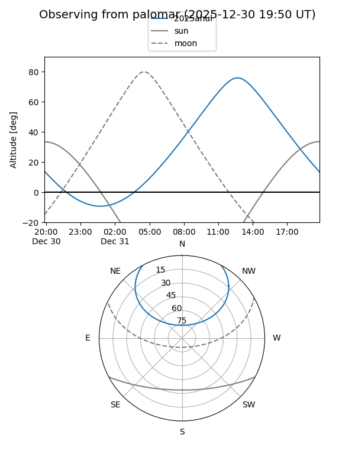

2025ahul
Target 2025ahul at 2025-12-31 18:00
Aliases and brokers:
FINK: link
Lasair: link
ALeRCE: link
TNS: link
YSE: link
alt names
ZTF25aciwbsc (ztf,fink_ztf)
2025ahul (tns,yse)
Coordinates:
equatorial (ra, dec) = 173.2394,+47.49575
equatorial (HMS+DMS) = 11:32:57.46,+47:29:44.72
galactic (l, b) = (154.7301,+64.49759)
Flags:
Photometry:
last ztfg=20.41
1 ztfg detections
Lightcurve

Visibility


Additional plots